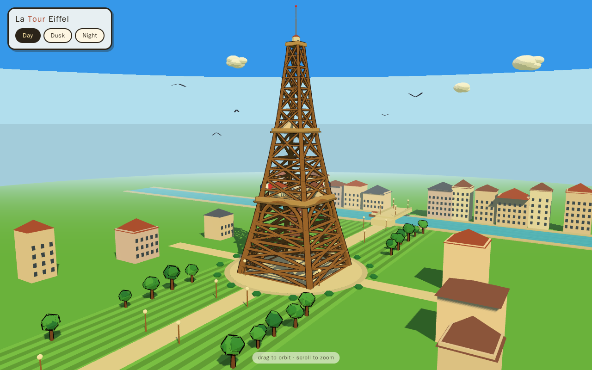
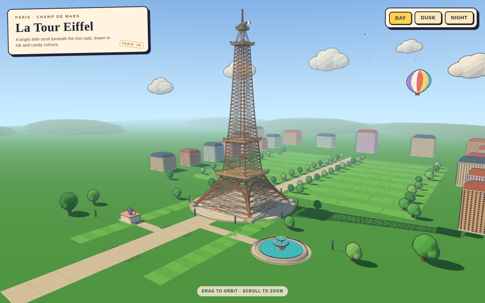
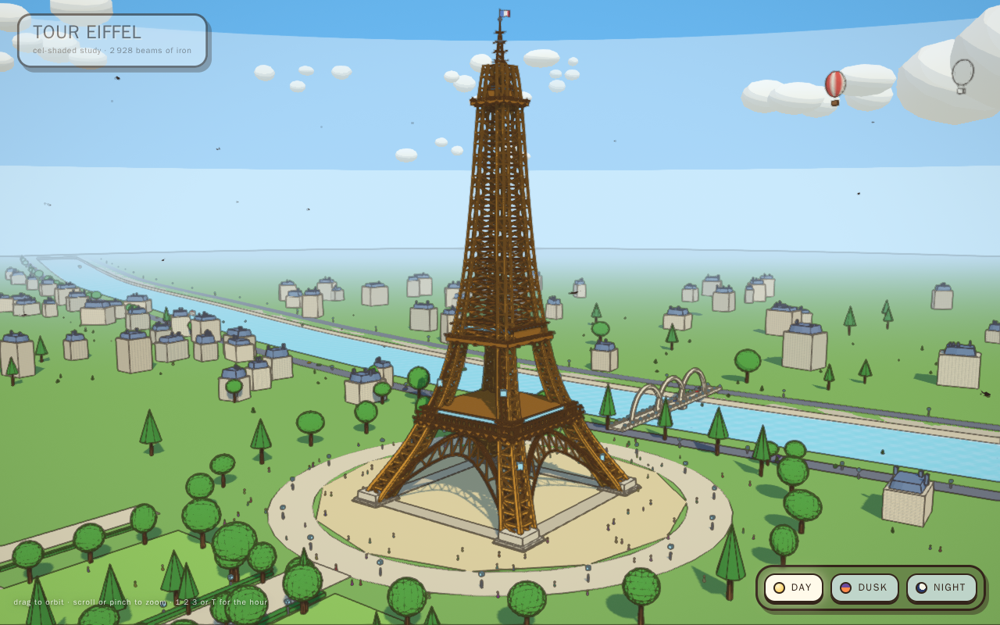
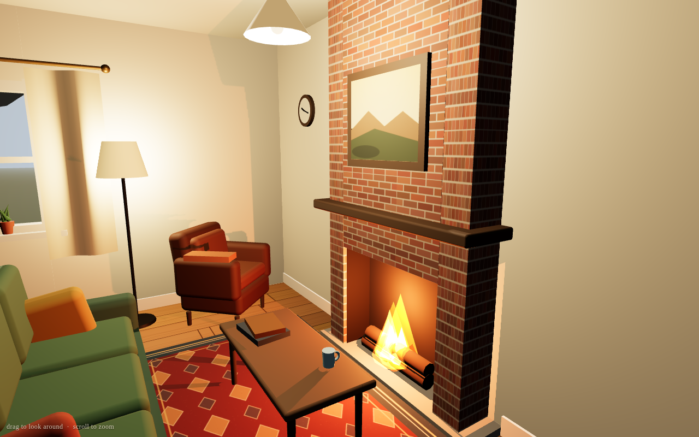
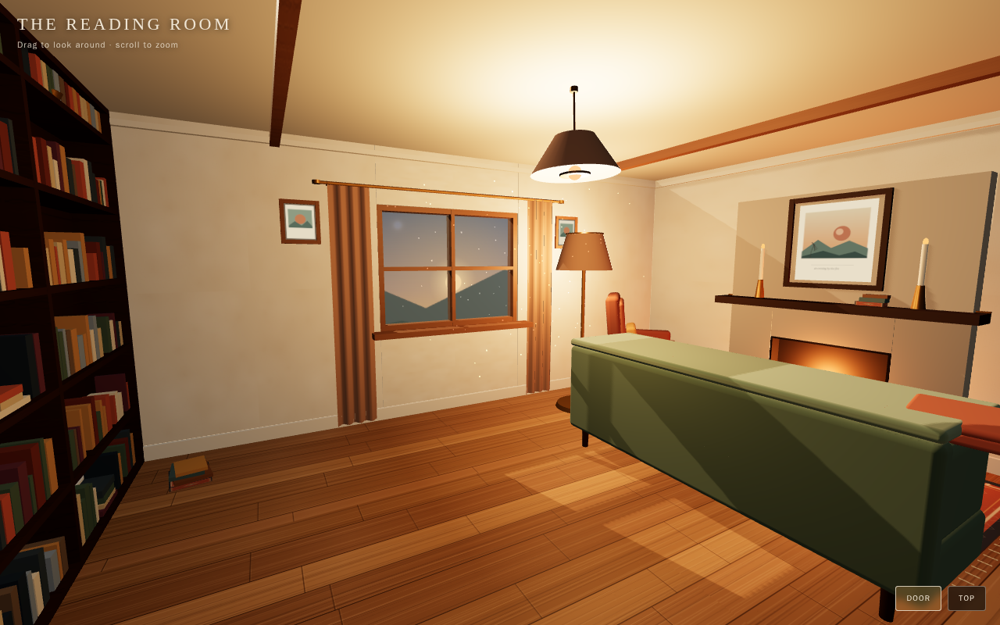
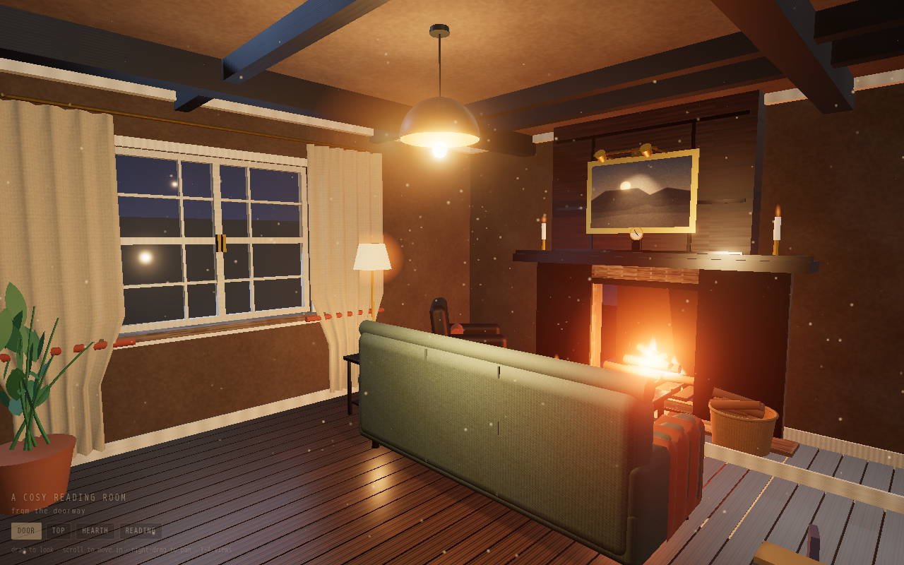
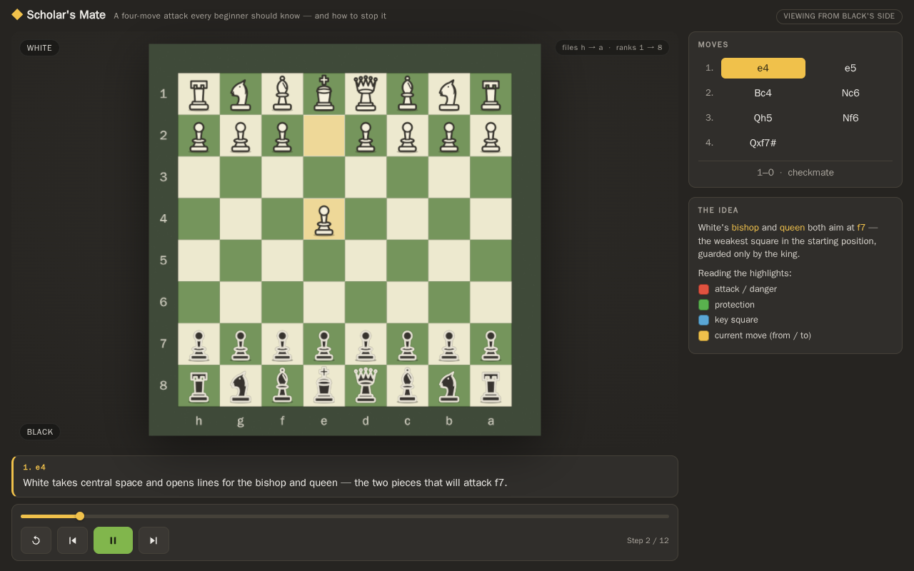
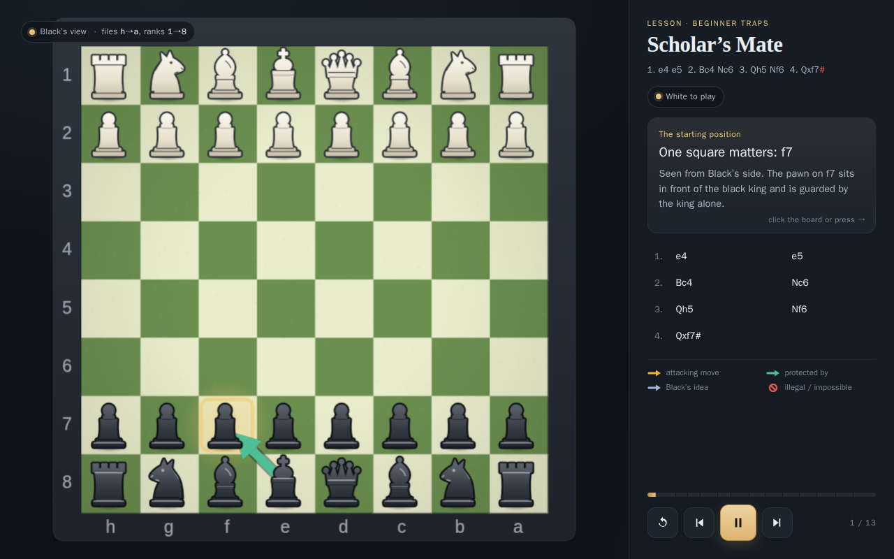
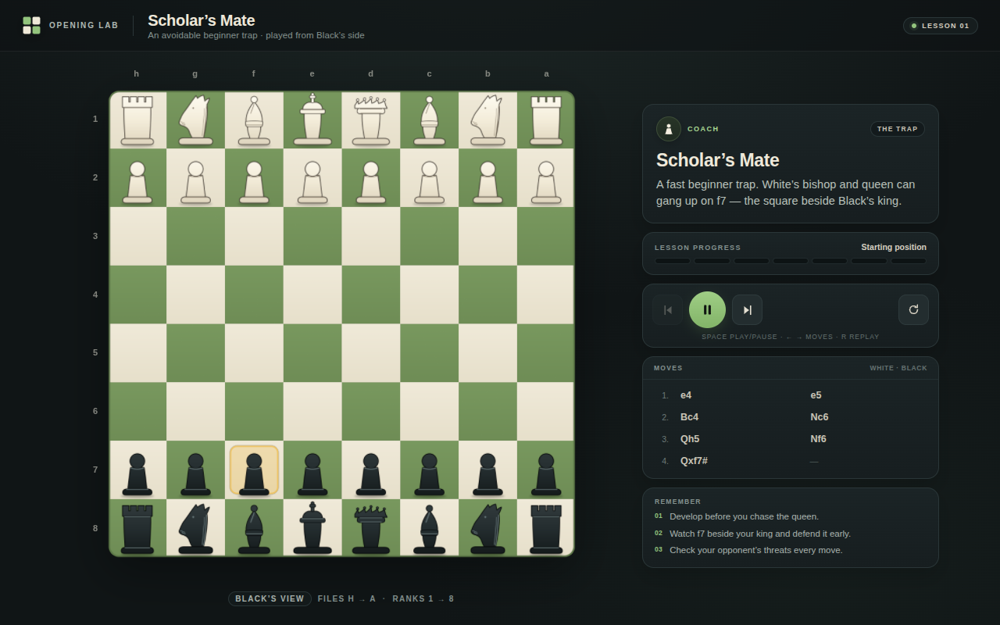
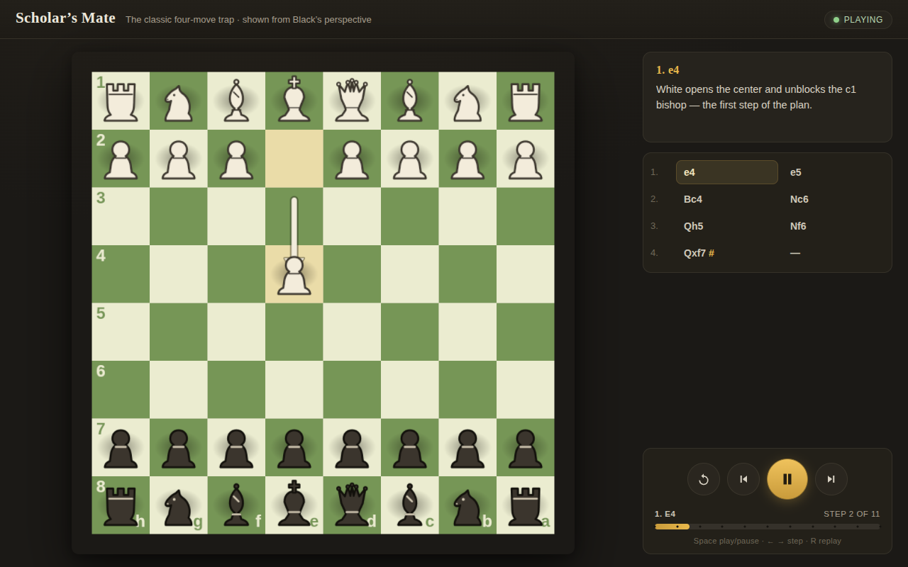

Open-weight models, one prompt, no follow-up
Each model, in a specific pack and quant on a specific engine, gets one prompt in OpenCode and works until it decides it is done. No follow-up turns, no time limit. We publish what it made, live, with every token, model call and watt-hour. A failed attempt may be retried; every attempt stays listed.
Early proof of concept: 12 results from 4 setups on 3 tasks. One result per setup and task; no votes or rankings yet.
Tasks · 3D scenes
Pick a task to watch the results live and compare them side by side.












Results by setup
A setup is a model in one pack and quant on one engine. Click a result to open it, or a setup for everything it has run.
| Setup | Eiffel Tower | Reading room | Scholar's Mate |
|---|---|---|---|
| DeepSeek V4.1 Flash 1017 iQ-MLX 3.0 bpw · ddalcu/DeepSeek-V4.1-Flash-1017-MLX-Serve-iQ-MLX-3.0bpw mlx-serve 26.11.2 · M3 Ultra | 214.0K tokens · 148.34 Wh | 132.7K tokens · 68.24 Wh | 165.1K tokens |
| GLM-5.3-Flash oQ4e · Jundot/GLM-5.3-Flash-oQ4e-mtp omlx 0.7.4.dev1 · M3 Ultra | 61.2K tokens · 70.45 Wh | 44.7K tokens · 21.48 Wh | 71.2K tokens · 41.0 Wh |
| Qwen3.8-27B 4-bit MLX · lmstudio-community/Qwen3.8-27B-MLX-4bit kapitsa 0.2.34 · M3 Ultra | 204.6K tokens · 118.28 Wh | 169.2K tokens · 72.98 Wh | 167.4K tokens · 65.12 Whattempt 2 of 2 |
| Qwen3.8-Flash-Next oQ4e · Jundot/Qwen3.8-Flash-Next-oQ4e-mtp omlx 0.7.4.dev1 · M3 Ultra | 284.2K tokens · 76.72 Whattempt 2 of 2 | 347.8K tokens · 94.53 Wh | 403.9K tokens · 110.39 Wh |
Tokens are generated tokens (output + reasoning). Energy is CPU+GPU+ANE on the M3 Ultra, not wall power.